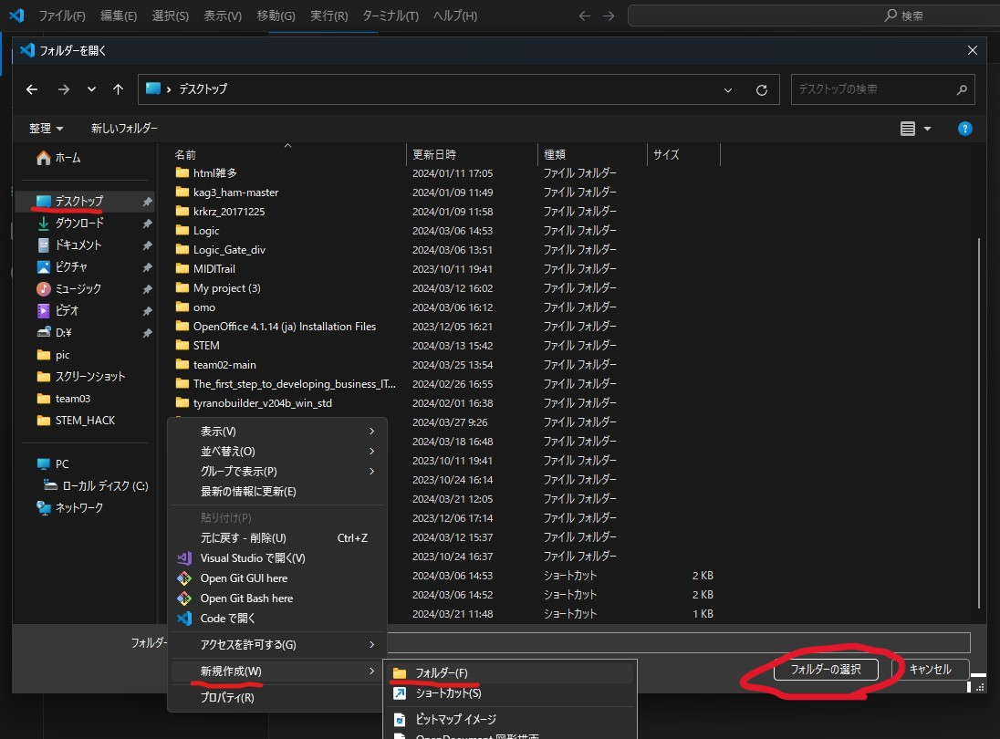
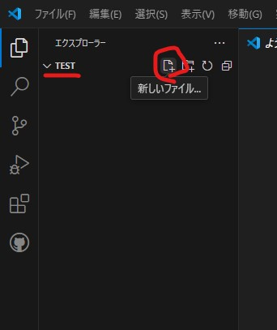

VSCodeでファイルを編集できるようにしましょう

フォルダーを開くと書かれたボタンをクリックしてください
そうしたらこのような画面になるのでデスクトップにフォルダを作成します。
左側のアイコンにあるデスクトップを開きます。
そうすると右側の画面がデスクトップのフォルダを開きますので、ファイルを選択しないように余白部分を右クリックして新規作成からフォルダを作成してください。
フォルダ名はtestとしましたが、名前はどんなものでも大丈夫です。ファイルが選択出来たら右下のフォルダを選択をクリックしてください
ファイルを開いてその中に適当にテキストを入れてみましょう
フォルダを開いたらエクスプローラーにフォルダ名が書かれた項目ができていると思います
フォルダ名の上にカーソルを置くと新しいファイルを作成できるボタンが出てきます。また、エクスプローラーを右クリックして出てくるメニューからも作成できます
そうするとこのように